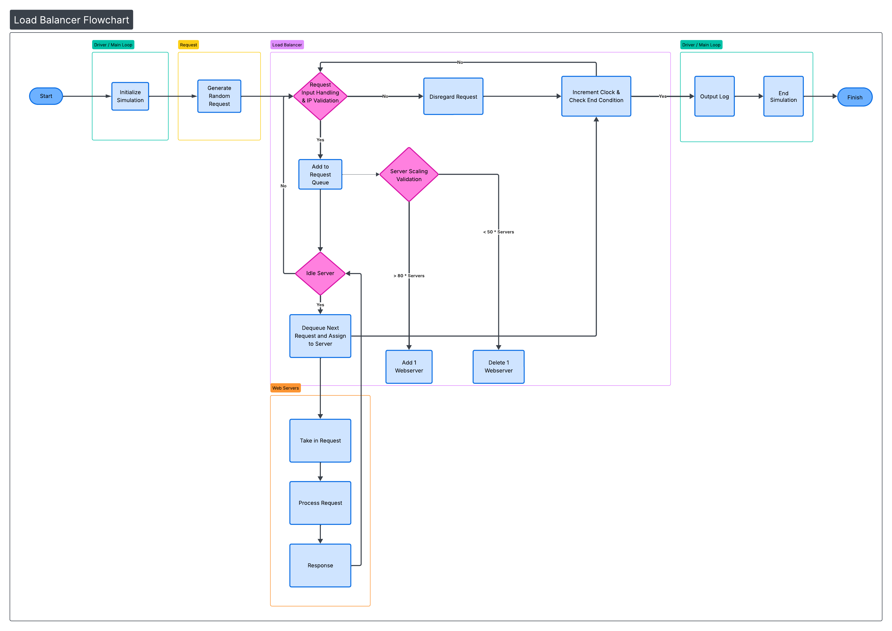

Loading...
Searching...
No Matches
Project Overview
Project Description
This project simulates a large-scale enterprise load balancer built in C++. The system manages incoming web requests, distributes them across dynamically allocated web servers, and maintains system efficiency using adaptive scaling logic.
The simulation operates in clock cycles. Each cycle may generate new requests, process existing ones, and dynamically adjust server count based on queue thresholds.
Core Components
- Driver: Initializes the simulation by setting the number of servers, the duration to run the load balancer, and the initial full request queue. It also creates the LoadBalancer and WebServer instances, and starts the request processing workflow.
- Request: A lightweight data structure containing data such as IP in, IP out, Job Type, and Time. Generate data randomly and throughout the alloted time sporadically.
- LoadBalancer: Acts as the central controller of the system. It manages server allocation, validates and distributes incoming requests, monitors queue size, and coordinates scaling decisions.
- WebServer: Represents an individual processing unit. Each server handles one request at a time and tracks its processing state per clock cycle.
UML Diagram

- Generated by
 1.16.1
1.16.1